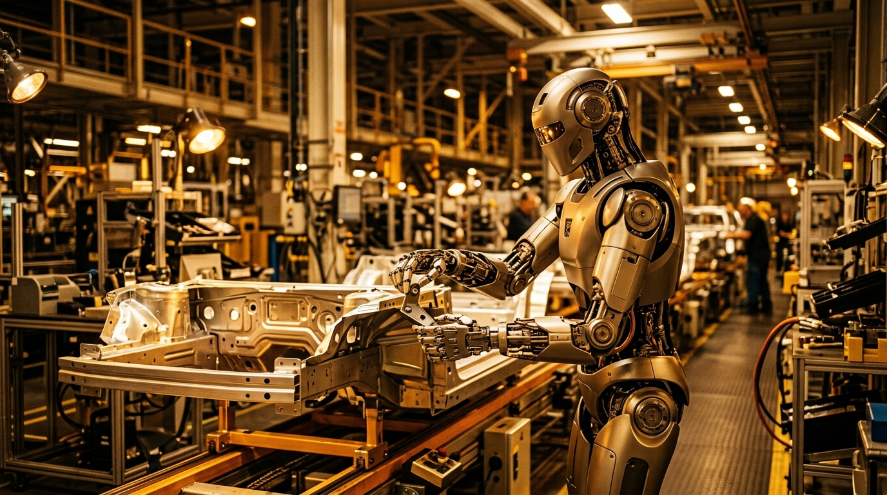

Figure AI & BMW Deploy "Figure 03" Humanoid Swarm in Spartanburg Plant, Powered by Helix-2 End-to-End Neural Robotics Model

SPARTANBURG, SC & SUNNYVALE, CA — September 19, 2026 — In a watershed moment for physical artificial intelligence and industrial automation, Figure AI and BMW Group have transitioned their humanoid robotics initiative from experimental pilot validation to permanent, multi-shift commercial production at BMW's flagship Spartanburg manufacturing facility.
The deployment features a coordinated fleet of newly revealed Figure 03 humanoid robots, operating on production lines alongside human automotive specialists. Powered by Figure's proprietary Helix-2 Vision-Language-Action (VLA) foundation model, Figure 03 achieves continuous 50Hz end-to-end motor control, sub-millimeter insertion precision, and dynamic tool manipulation without requiring dedicated safety cages or pre-programmed geometric coordinate scripts.
1. The Helix-2 VLA Model: Direct Optical-to-Torque Neural Policy
Traditional industrial robots require rigid fixtures, high-precision jigs, and static trajectory programming that fails if an unpainted body panel shifts by even 3 millimeters. Figure 03 replaces rigid kinematics with Helix-2, an end-to-end multimodal foundation model that directly maps high-speed RGB-D optical streams and wrist tactile sensors into joint torque vectors:
- 50Hz Reflex Control Loop: Processes sensory feedback within 20 milliseconds, enabling instantaneous compensation for micro-vibrations, material flexing, and parts variance.
- Zero-Shot Tool Handling: Enables the robot to pick up pneumatic torque guns, alignment pins, and sheet-metal grips organically, generalizing grip dynamics from internet-scale physical interaction datasets.
- Tactile Density Feedback: High-density array sensors embedded across the robot's sixteen-degree-of-freedom hands measure shear forces, verifying component seating without marring premium automotive finishes.
"This is the inflection point where humanoid robotics moves out of staged venture demos and directly into the economics of heavy industrial manufacturing. Figure 03 and Helix-2 have demonstrated that a humanoid robot can work alongside automotive craftspeople across full 8-hour shifts with higher repeatable precision and zero lost-time incidents."
Figure 03 Spartanburg Assembly Line Performance Metrics
2. Ergonomic Relief and Industrial Workplace Symbiosis
At BMW Spartanburg—the German automaker's largest global production facility—Figure 03 units have been deployed to tasks characterized by extreme ergonomic strain. The robots are assigned to underbody structural seating, high-force sheet metal bracket retention, and overhead wire harness routing—tasks that previously contributed to repetitive strain injuries among human assembly teams.
Rather than replacing human workers, the deployment has allowed BMW to reassign technicians to precision quality inspection, electrical harness diagnostics, and robotic supervisory orchestration.
"The automotive industry is rapidly transforming towards flexible, electrified modular platforms. Integrating Figure 03 into our body shop allows us to eliminate high-strain ergonomic bottlenecks while maintaining the stringent quality benchmarks our customers demand."
3. Redundant Safety & ISO 10218-3 Collaborative Compliance
Safety was paramount during BMW's multi-month validation regimen. Figure 03 features hardware-level electronic torque limiters on all 44 actuators. If any joint experiences resistance exceeding 15 Newtons beyond its nominal model prediction, the robot decelerates to an immediate compliant dampening state within 4 milliseconds.
Omnidirectional stereo LiDAR sensors and 360-degree event-based vision cameras create a dynamic 3D exclusion envelope around the robot. If a human colleague reaches into the robot's workspace, Figure 03 gracefully yields spatial priority without dropping components or terminating its task sequence.
4. The Next Horizon: Fleet Scaling & Global Logistics
Following the milestone in South Carolina, Figure and BMW announced plans to expand deployments to European assembly plants in Munich and Leipzig over the next 18 months. Additionally, Figure AI confirmed that commercial availability of Figure 03 will open to third-party logistics and electronics assembly partners in early 2027.
As foundational world models like Helix-2 continue to scale on embodied interaction data, the boundary between software intelligence and mechanical utility is rapidly dissolving, cementing 2026 as the inaugural year of commercial physical AI.